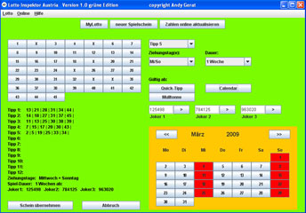
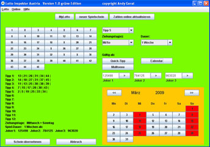
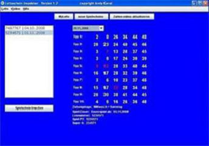
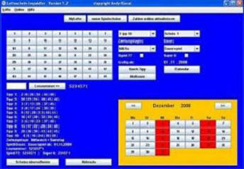
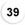
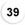
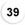

Menü


Anzeigen
Anzeigen
Neuigkeiten
Lottokugeln im deutschen Lotto am Samstag durch Fußball verdrängt!
Die wichtigsten Neuerungen in der Version 1.4:
- 12 Tippreihen pro Spielschein statt bisher 10
- Anzeige der gezogenen Lottozahlen zum ausgewählten Datum im persönlichen Spielschein.
- interne Änderungen beim Lottozahlen-Update
17.03.2009 'Lotto - Inspektor Austria' Download veröffentlicht!
Die Entwicklung des 'Lotto - Inspektor Austria' ist abgeschlossen. Die Lotto Software für Österreich befindet sich nun in der Testphase.
Die Testphase der Lotto Software 'Lotto - Inspektor Austria' wird vorraussichtlich in dieser Woche abgeschlossen sein und danach im Download-Bereich zur Verfügung stehen.
Somit steht in den nächsten Tagen auch den Lotto-Spielern in Österreich eine Lotto Software zur Verfügung, die es ermöglicht Lottoscheine bequem und einfach auf Gewinne zu prüfen.
Der 'Lotto - Inspektor Austria' wurde für das populäre Lotto '6 aus 45' in Österreich entwickelt. Es lassen sich Lottoscheine mit bis zu 12 Tippreihen und 3 Jokerzahlen erstellen.
01.01.2009 Online-Lotto verboten
Die ARD will die Ziehung der Lottozahlen im Lotto am Samstag wegen einer Ausweitung der 'Sportschau' ab 8. August 2009 verschieben.
Grund hierfür ist die startende Bundesligasaison 2009/2010.
Laut der Lausitzer Rundschau vom 05.08.09 soll die Ziehung erst gegen 22.00 Uhr starten. Im TV-Programm von TV Today ist der Beginn der Ziehung mit 22.25 Uhr angegeben.
07.05.2009 Lotto - Inspektor Version 1.4 steht zum Download bereit
Grund hierfür ist die startende Bundesligasaison 2009/2010.
Laut der Lausitzer Rundschau vom 05.08.09 soll die Ziehung erst gegen 22.00 Uhr starten. Im TV-Programm von TV Today ist der Beginn der Ziehung mit 22.25 Uhr angegeben.
Die wichtigsten Neuerungen in der Version 1.4:
- 12 Tippreihen pro Spielschein statt bisher 10
- Anzeige der gezogenen Lottozahlen zum ausgewählten Datum im persönlichen Spielschein.
- interne Änderungen beim Lottozahlen-Update
Die Lotto Software 'Lotto - Inspektor Austria' für das Lotto 6 aus 45 (Österreich) steht ab sofort im Download-Bereich zur Verfügung.
Die entsprechende Dokumentation zur neuen Version finden Sie unter dem Menüpunkt Dokumentation.

24.02.2009 'Lotto - Inspektor Austria' in TestphaseDie entsprechende Dokumentation zur neuen Version finden Sie unter dem Menüpunkt Dokumentation.

Die Entwicklung des 'Lotto - Inspektor Austria' ist abgeschlossen. Die Lotto Software für Österreich befindet sich nun in der Testphase.
Die Testphase der Lotto Software 'Lotto - Inspektor Austria' wird vorraussichtlich in dieser Woche abgeschlossen sein und danach im Download-Bereich zur Verfügung stehen.
Somit steht in den nächsten Tagen auch den Lotto-Spielern in Österreich eine Lotto Software zur Verfügung, die es ermöglicht Lottoscheine bequem und einfach auf Gewinne zu prüfen.
Der 'Lotto - Inspektor Austria' wurde für das populäre Lotto '6 aus 45' in Österreich entwickelt. Es lassen sich Lottoscheine mit bis zu 12 Tippreihen und 3 Jokerzahlen erstellen.
Seit dem 01.01.2009 ist in Deutschland das Lotto spielen im Internet gemäss Glücksspiel- staatsvertrages verboten.
Die einzige legale Möglichkeit beim deutschen
Lotto 6 aus 49 mitzuspielen ist der Weg zur Lotto-Annahmestelle. Per Hand ausgefüllte Lottoscheine müssen jedoch nicht mühsam und manuell auf Gewinne geprüft werden.
Installieren Sie jetzt den Lotto-Inspektor und lassen Sie Ihre deutschen Lottoscheine automatisch auf Gewinne und Jackpot prüfen.
Unser Lotto Programm für Windows bietet dank Online-Datenbank stets aktuelle Lottozahlen die Sie jederzeit updaten können.
Auswertung, Analyse und Check der Lottozahlen für das Lotto 6 aus 49, Spiel77 und Super6 ist mit der Lotto Software mega-einfach!
Die einzige legale Möglichkeit beim deutschen
Lotto 6 aus 49 mitzuspielen ist der Weg zur Lotto-Annahmestelle. Per Hand ausgefüllte Lottoscheine müssen jedoch nicht mühsam und manuell auf Gewinne geprüft werden.
Installieren Sie jetzt den Lotto-Inspektor und lassen Sie Ihre deutschen Lottoscheine automatisch auf Gewinne und Jackpot prüfen.
Unser Lotto Programm für Windows bietet dank Online-Datenbank stets aktuelle Lottozahlen die Sie jederzeit updaten können.
Auswertung, Analyse und Check der Lottozahlen für das Lotto 6 aus 49, Spiel77 und Super6 ist mit der Lotto Software mega-einfach!
Lotto-Inspektor
Die Lottoschein - Verwaltung
Der Lotto - Inspektor ist eine Lottoscheinverwaltung mit Gewinnermittlung. Kostenlose Shareware-Version ohne zeitliche Begrenzung nutzbar.

Die aktuellen Lottozahlen sind stets Online abrufbar und werden auf Knopfdruck im Lotto - Inspektor aktualisiert !!!
Neues Tippfeld: Eingabe der Lottozahlen im übersichtlichen Tippfeld per Mausklick
Neuer Datums-Kalender zum Auswählen des ersten Ziehungstages
Neues Design
Generierung von zufälligen Tippreihen per Zufallsgenerator

2009-09-16
deutscher Lottoblock 6aus49


Zusatzzahl: 30
Superzahl: 3
Spiel77: 9585044
Super6: 364245
alle Angaben ohne Gewähr
Zusatzzahl: 30
Superzahl: 3
Spiel77: 9585044
Super6: 364245
alle Angaben ohne Gewähr
2009-09-16
Lotto Österreich 6aus45

 

Zusatzzahl: 36
Jokerzahl: 873637
alle Angaben ohne Gewähr

Zusatzzahl: 36
Jokerzahl: 873637
alle Angaben ohne Gewähr
Lottoseiten
Die Lottoseiten der jeweiligen Bundesländer
Online Lotto
Baden-Württemberg
Bayern
Berlin
Brandenburg
Bremen
Hamburg
Hessen
Mecklenburg-Vorpommern
Niedersachsen
Nordrhein-Westfalen
Rheinland-Pfalz
Saarland
Sachsen
Sachsen-Anhalt
Schleswig-Holstein
Thüringen
Partner
spreesoft
Webhosting und Domain Services
günstige Webhosting-Pakete inkl. DE-Domain bereits ab 0,99 Euro OHNE Einrichtungsgebühren!!!
Informatik - Kompendium
Informatik-Kompendium bietet alles zum Thema:
HTML XHTML CSS Javascript PHP MySQL JAVA C++ Web-tools Programmiersprachen 3D Modelling Audio/Video
Shareware-Katalog
Shareware.de